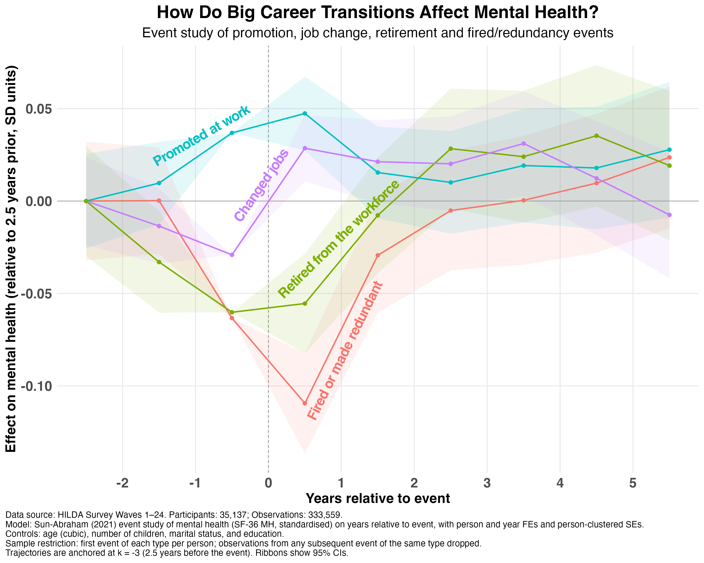

A lot of organisational research (including my own) tends to focus on how features of the job, workplace, or psychosocial environment produce gradual changes in mental health over time. But sometimes that change is accelerated by single events that produce non-linear effects.
I used the HILDA panel (24 years of Australian data, ~17,000 people per wave) to look at how four career-related transitions shape mental health: getting promoted, getting fired/made redundant, changing jobs, and retiring.
To do this, I conducted an event study. For each person who experienced one of these events, I examined how their mental health changed in the 3 years before and the 5 years after.
The graph below shows the average mental health trajectory (relative to where the person was 2.5 years prior to the event). Interestingly, none of these events had permanent effects. By 5 years post-transition, mental health was largely back to baseline.

The real differences were in what happened from 3 years prior to 3 years after the event. Here's what the results showed:
1) Promotion. Mental health was already improving in the lead-up. This probably reflects the sustained engagement that gets people promoted in the first place. But the improvement faded within about 18 months.
2) Changing jobs. Mental health dropped in the lead-up, suggesting unhappiness with the current role. Then the year of the change produced the biggest immediate improvement of any event in this analysis.
3) Retirement. Mental health declined noticeably before the event, which could reflect decreasing engagement. Interestingly, there was no immediate post-event change, just a steady recovery from year 2 onwards.
4) Fired or made redundant. This produced the biggest single-year drop of any event. But the decline started well before the redundancy itself, with people showing reduced mental health 2 to 3 years out. By the time the redundancy landed, they had been struggling for a while. They improved quickly though, and were back to baseline within 2 years.
A note on effect sizes: You can get an idea of the strength of these effects by comparing them to other life events captured in the HILDA data. Turns out, the negative impact of being fired/made redundant is about on par with the death of a close friend. So these effects aren't trivial.
What's also interesting is that most of these "events" behave more like processes. The data shows that the change can start years before the event occurs. For events like layoffs that have a negative impact on both individuals and organisations, the findings suggest there's a window for support well before the event occurs.